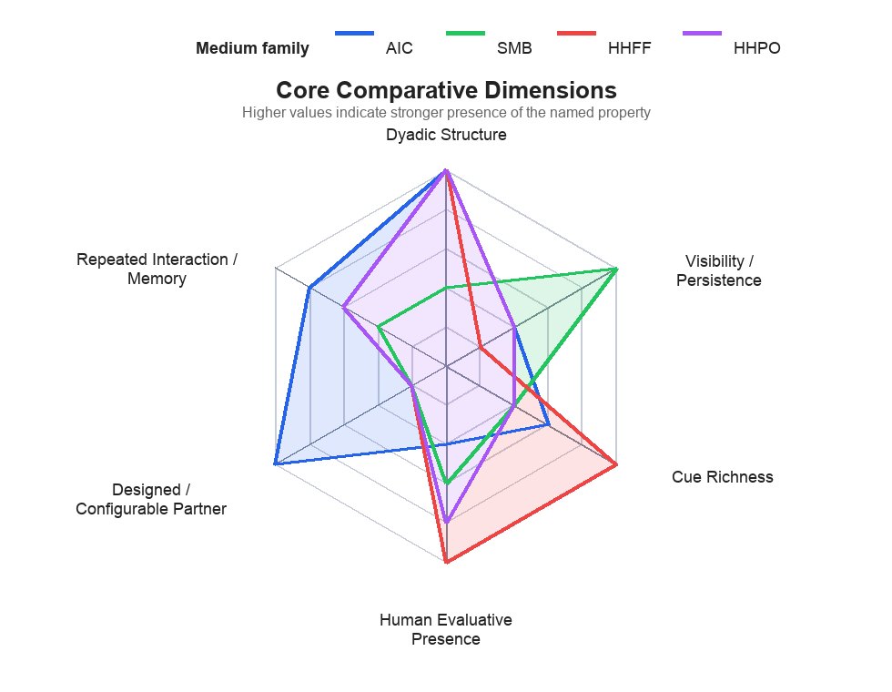
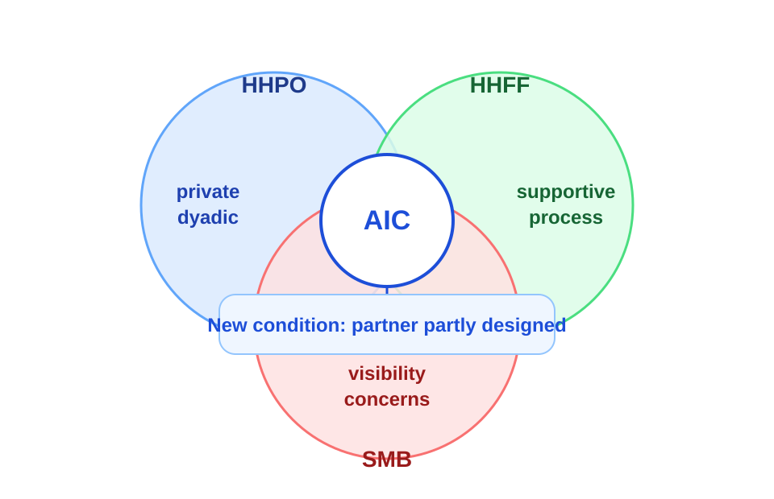

Disclosure Across AI Companions, Social Media, and Human-Human Interaction
`AIC` often looks closer to private dyadic interaction than to broadcast social media, but it also differs from both human-human literatures because the partner is partly designed, partly opaque, and variably anthropomorphized.
Why disclosure matters, and why it is not one thing
Self-disclosure sits at the center of relationship development, social support, therapy, identity presentation, persuasion, and self-understanding. But the same person may reveal more frequently in one medium, more deeply in another, and more honestly in a third.
Relational
Disclosure helps shape intimacy, trust, and mutuality in both human-human and human-AI interaction.
Supportive
It matters for help-seeking, emotional relief, adherence, and whether interaction becomes meaningful rather than merely functional.
Strategic
Disclosure is also managed in response to audience, risk, reputation, embarrassment, and platform persistence.
Medium matters, but not in a simple way
- "Human vs AI"
- "Online vs offline"
- "More disclosure vs less disclosure"
- topology and audience structure
- visibility and reputational cost
- cue richness and response form
- evaluative threat and support quality
- memory, continuity, and time horizon
- partner ontology and design
Four medium families anchor the comparison
`AIC`
Conversational agents, companions, therapeutic bots, support bots, social robots, and related AI interlocutors.
`SMB`
Public or semi-public social media disclosure, especially in broadcast and one-to-many settings.
`HHFF`
In-person human-human disclosure in cue-rich, socially consequential interaction.
`HHPO`
Dyadic private online human-human interaction such as chat, instant messaging, and other mediated private channels.
Disclosure is multidimensional
Many apparent contradictions in the literature are really measurement differences. Different papers operationalize different parts of the disclosure construct.
Amount
frequency or amount of revealed content
Depth
intimacy, emotional depth, vulnerability
Breadth
range of topics or domains covered
Honesty
accuracy, directness, deliberateness
Willingness
intention or readiness to disclose
Behavior
actual disclosure traces and content
Consequences
trust, return, adherence, relief, follow-through
Interpretation
what disclosure means depends on medium, stage, and partner type
Broad comparative evidence base, narrative survey logic
Corpus distribution
Comparative narrative survey rather than formal meta-analysis.
Broad heterogeneous evidence base spanning theory, methods, mechanisms, and downstream outcomes.
Atomic evidence statements linked across the survey summaries and evidence mapping files.
The broader proposition inventory is later compressed in the paper into `10` proposition families (`PR1` to `PR10`).
Each literature sees most clearly what its methods are built to detect
AIC
- fine-grained causal manipulation
- support style and reciprocity
- interface cues, labeling, continuity
SMB
- population-scale association
- audience structure, visibility, persistence
- real networked ecologies
HHFF
- naturalistic interpersonal process
- responsiveness and mutual vulnerability
- embodied interaction
HHPO
- channel comparison
- reduced-cue mechanisms
- weaker on long-horizon ecologies
Which method makes sense for which question?
Turn-level mechanism questions
Use controlled interaction or message-level experiments when the aim is to isolate one mechanism while holding the rest of the interaction constant.
Processual and trajectory questions
Use diaries, multi-session studies, or longitudinal interventions when time, habituation, or relationship stage is part of the mechanism.
Visibility and audience-structure questions
Use `SMB` survey, trace, or platform-level observational designs when heterogeneous audiences and publicness are the phenomenon.
Sensitive disclosure under constraints
Use bounded field, deployment, or quasi-field designs when compliance, help-seeking, or institutional realism matters.
Comparative profile of core disclosure dimensions across media

Social media broadcast shows what disclosure looks like under publicness
Basic logic
- one-to-many or many-to-many visibility
- imagined audience and context collapse
- reputational exposure and persistence
- impression management pressure
Why it matters here
`SMB` is the strongest contrast case for publicness, networked audience logic, and reputational cost. It helps show that some apparent AIC advantages come from private topology, not from AI alone.
Face-to-face disclosure clarifies the role of responsiveness and reciprocity
Core face-to-face logic
Disclosure does not automatically create closeness. Disclosure plus responsive reception creates closeness.
Comparative contribution
`HHFF` provides the clearest benchmark for a supportive, cue-rich, dyadic disclosure environment and shows why responsiveness is relational rather than mechanical.
Private online human-human interaction is the closest non-AIC comparison family
What it shows
Reduced cues can support direct questioning, strategic disclosure, and faster uncertainty reduction.
What it complicates
Online private interaction is not uniformly more intimate than face-to-face. Relationship stage matters.
Why it matters for AIC
Some AIC effects may reflect structural similarity to low-cue private exchange rather than uniquely AI-specific properties.
Why the AIC literature is distinctive

AIC disclosure as a mechanism-to-outcome pathway
These can interact reciprocally rather than as a one-shot input-output pair.
Strong convergences in the AIC literature
Disclosure can be meaningful
Disclosure to AI is not merely shallow role-play or pure task convenience.
Support quality matters
Perceived responsiveness and emotionally fitting support matter more than output presence alone.
Reciprocity works conditionally
Reciprocal disclosure is not a simple mirroring trick; it works best when emotionally resonant and context-matched.
Time changes the mechanism
Repeated interaction changes both disclosure itself and how the partner is interpreted.
What is conditional, moderated, or still unsettled
Anthropomorphism
Can help when it increases warmth or fluency, but hurt when it increases evaluative threat or embarrassment.
Partner identity
"Human vs AI" does not carry a stable sign because responsiveness, judgment threat, trust, and expectations can move in different directions.
Long-horizon effects
Still unsettled: whether disclosure deepens, plateaus, destabilizes, or produces uneven benefit-risk profiles over longer periods.
What disclosure does in AIC settings
Relief
emotional processing, comfort, coping
Satisfaction
reuse intention, intimacy, willingness to continue
Trust calibration
trust-building without reducing disclosure to trust alone
Compliance
recommendation acceptance, adherence, follow-through
Relationship deepening
agent becomes more familiar, social, or companion-like
Risk channel
over-disclosure, privacy exposure, dependence, asymmetric understanding
Major blind spots in the current evidence base
AIC-specific
- durable functional companions
- long-horizon harm research
- stronger moderator designs
- more multimodal and embodied work
Cross-medium
- harmonized disclosure dimensions
- direct AIC / HHPO / HHFF / SMB comparison
- better integration of audience and partner models
Methodological
- formal and computational modeling
- more behavior, fewer intention-only studies
- more temporal designs
- cross-context causal transport tests
Research agenda
Model environments by mechanisms
Use topology, visibility, cue richness, partner ontology, support quality, social-risk cues, and memory rather than coarse medium labels.
Use comparable disclosure dimensions
Distinguish frequency, breadth, depth, honesty, emotional vulnerability, willingness, and downstream consequences consistently.
Run direct cross-medium programs
Build matched paradigms across `AIC`, `HHPO`, and `HHFF`, and vary publicness to connect dyadic and `SMB` models.
Exploit AIC as an intervention surface
Vary empathy, self-disclosure strategy, anthropomorphism, memory, pacing, and role framing to test disclosure mechanisms directly.
Takeaways
- Disclosure is multidimensional, not one generic quantity.
- Media comparison works best when decomposed into structural and relational dimensions.
- `AIC` is not just another disclosure channel; it is also a designed disclosure environment.
- The main payoff is not deciding which medium "wins," but building a cumulative model of what shapes disclosure.